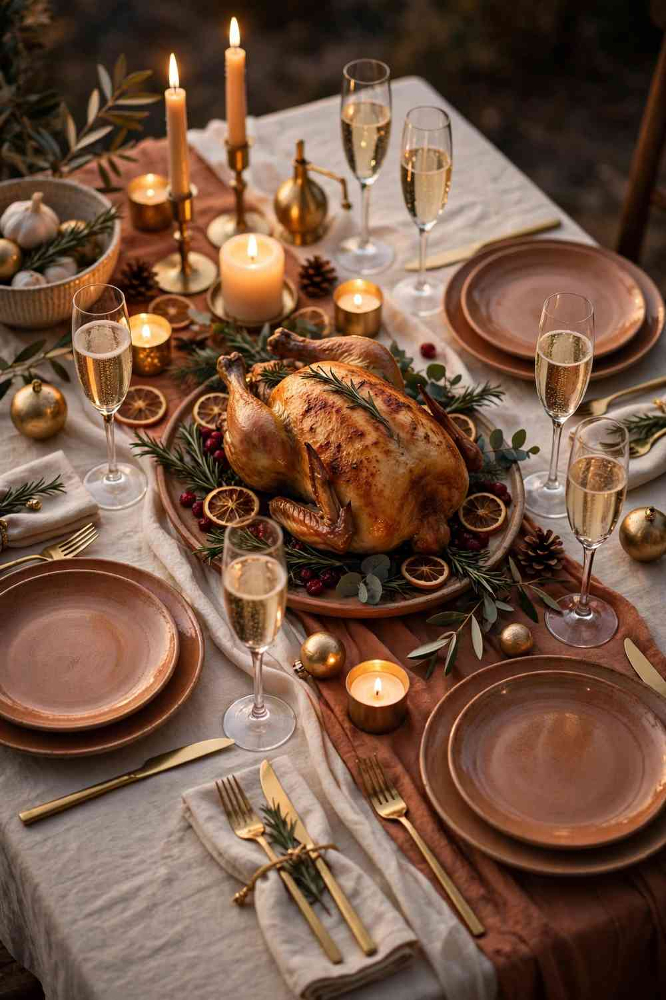
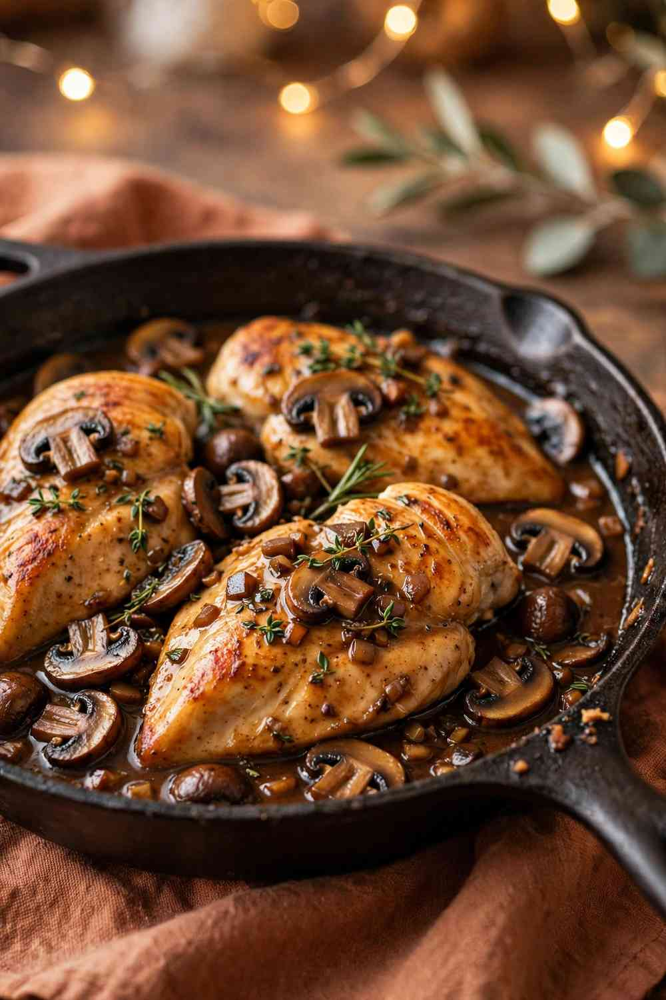
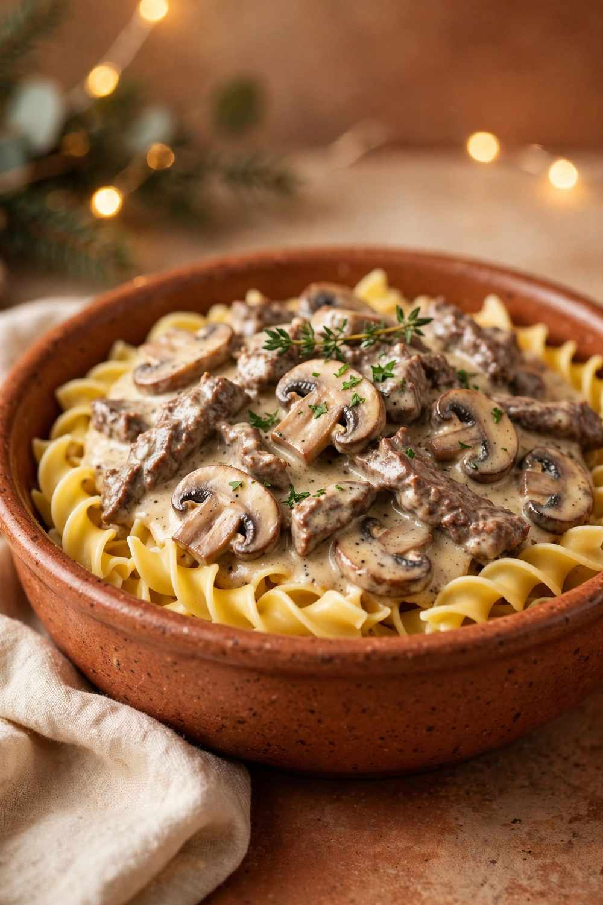
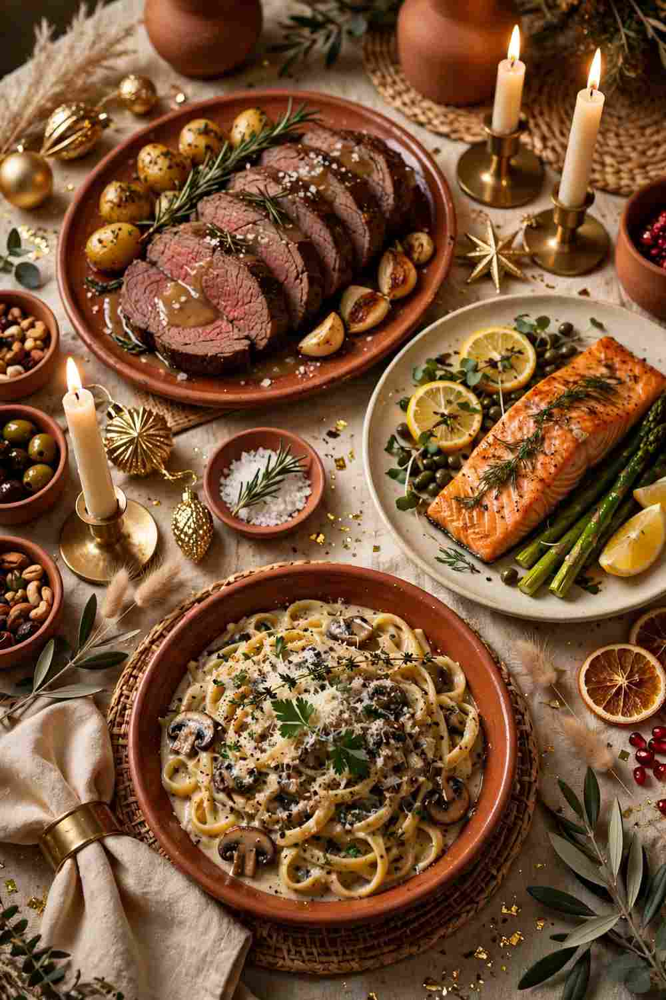
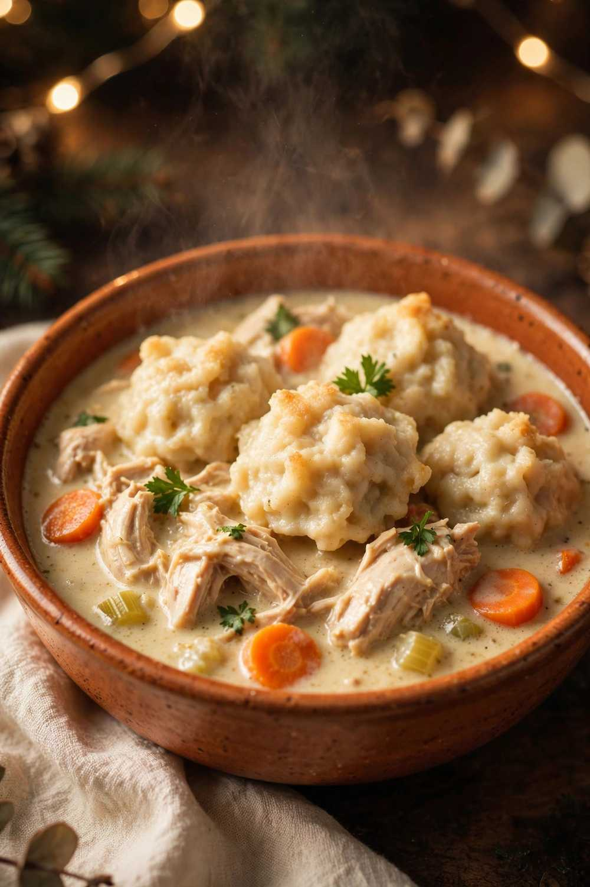
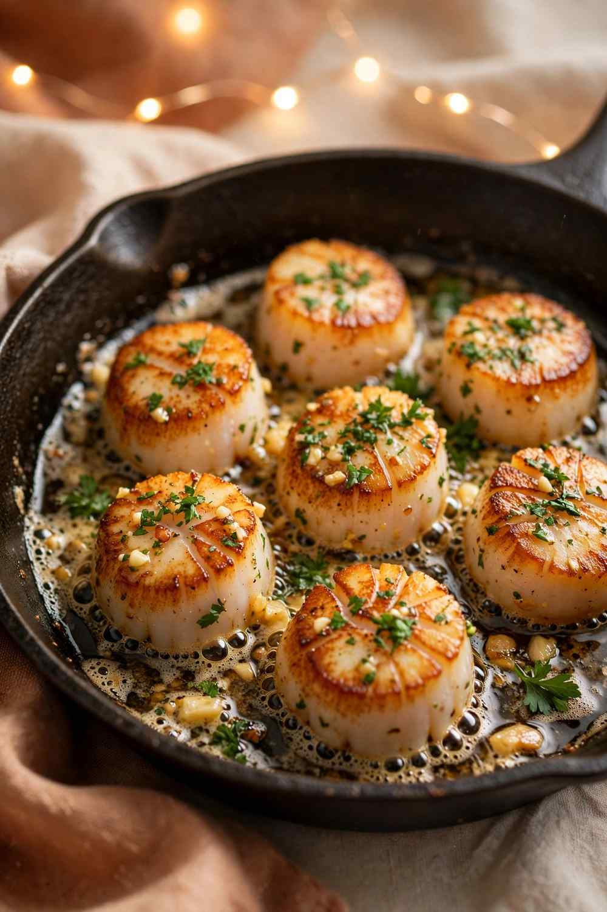
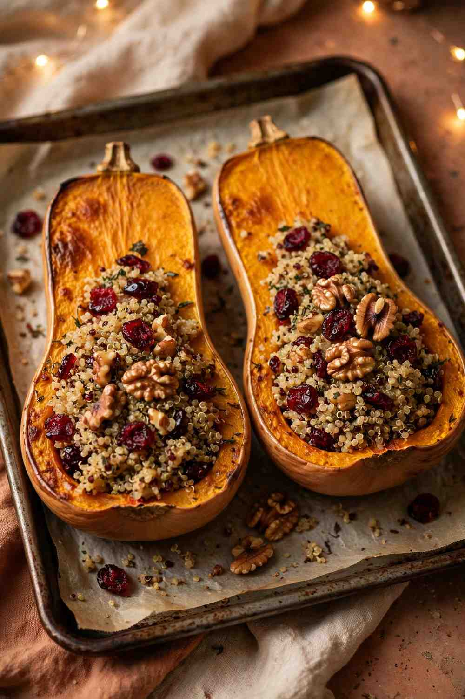
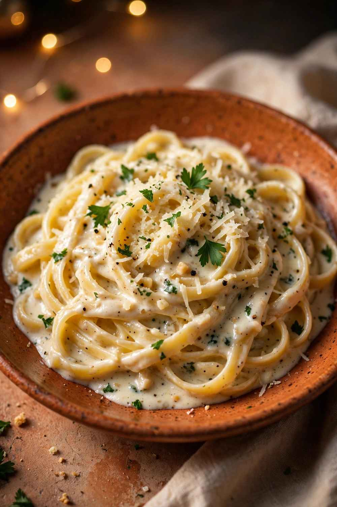
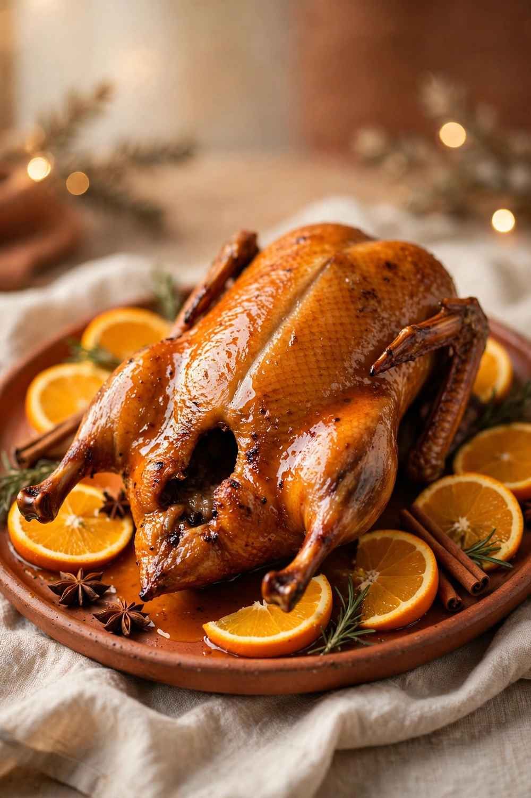

20+ New Year's Eve Dinner Ideas for Family and Friends
📌 Save to Pinterest
New Year's Eve dinner should feel special without keeping the host in the kitchen all night. This roundup gathers twenty dinner ideas for family and friends — showpiece roasts, slow cooker mains that cook while you set the table, golden baked pasta, and a few luxurious touches like lobster tails and seared scallops. Pick one showpiece, add a hands-off dish, and let the evening be about the people at the table, not the stove.
How to plan a New Year's Eve dinner
Build the menu around one centerpiece and two supporting dishes: a roast or Wellington for the table, a slow cooker main that needs no attention, and something quick — pasta or steak bites — for the last hour. Slow cooker recipes are the host's best friend on New Year's Eve, because they free up the oven and the evening. Serve family-style so everyone helps themselves, and keep the sides simple: roasted vegetables, a green salad, and good bread.
Good to know: Everything is written in American English, and measurements use US customary units — cups, tablespoons, and Fahrenheit — for cooks in the United States. Always follow safe food-handling guidance, and check labels for allergens when cooking for others.
Food safety: cook poultry to 165°F (74°C), ground sausage to 160°F (71°C), and whole cuts of beef and pork to 145°F (63°C) with a 3-minute rest. Cook fish to 145°F (63°C) and shellfish until opaque. Reheat cooked ham to 140°F (60°C). Check with a food thermometer.
Roasts & showpiece mains
The dishes that make the table feel like a celebration — a crusted prime rib, fall-apart short ribs, bright salmon and buttery shrimp pasta.
1. Herb Crusted Prime Rib Roast

A showpiece roast with a garlic-herb crust.
Ingredients
- 1 bone-in prime rib roast (5 lbs)
- 4 garlic cloves
- 2 tbsp olive oil
- 2 tbsp chopped rosemary
- 1 tbsp thyme
- salt and pepper
Directions
- Rub the roast with oil, garlic, rosemary and thyme.
- Roast at 450°F for 20 minutes, then 325°F for 90 minutes until 130°F inside.
- Rest 20 minutes before slicing.
2. Slow Cooker Beef Short Ribs

Fall-apart ribs in a rich sauce.
Ingredients
- 4 lbs beef short ribs
- 2 cups beef broth
- 1 cup red wine
- 2 onions
- 4 garlic cloves
- 2 tbsp tomato paste
- 1 tbsp rosemary
Directions
- Brown the ribs in a skillet.
- Add broth, wine, onions, garlic, tomato paste and rosemary to a slow cooker.
- Cook on low 8 hours until the meat falls off the bone.
Food safety: cook the beef to at least 145°F (63°C) — short ribs are done when tender.
3. Baked Salmon with Lemon Butter Sauce

Flaky salmon, bright butter sauce.
Ingredients
- 2 lbs salmon fillet
- 4 tbsp butter
- 2 garlic cloves
- juice of 1 lemon
- 1 tbsp chopped dill
- salt and pepper
Directions
- Place salmon in a baking dish and season.
- Melt butter with garlic and lemon juice.
- Pour over the salmon and bake at 400°F for 15 minutes.
- Sprinkle with dill.
Food safety: cook the salmon to 145°F (63°C), or until the flesh is opaque and flakes easily.
4. Shrimp Scampi Pasta with Lemon

Buttery shrimp over linguine.
Ingredients
- 1 lb shrimp
- 12 oz linguine
- 4 tbsp butter
- 4 garlic cloves
- 1/2 cup white wine
- juice of 1 lemon
- 1/4 cup chopped parsley
Directions
- Cook the linguine and drain.
- Sauté shrimp in butter and garlic for 3 minutes per side.
- Add wine and lemon juice, toss with pasta and parsley.
Food safety: cook the shrimp until the flesh is pearly and opaque.
5. Chicken Marsala with Mushrooms

Golden chicken in a wine sauce.
Ingredients
- 4 chicken breasts
- 1 cup flour
- 8 oz mushrooms
- 1 cup Marsala wine
- 1 cup chicken broth
- 2 tbsp butter
- 2 garlic cloves
Directions
- Dredge chicken in flour and brown in butter.
- Sauté mushrooms and garlic in the same pan.
- Add wine and broth; simmer 10 minutes and return the chicken to the pan.
Food safety: cook the chicken to 165°F (74°C) — check with a food thermometer.
Slow cooker & baked mains
Hands-off mains and golden baked dishes — the slow cooker does the work while you enjoy the evening, and the oven finishes the rest.
6. Slow Cooker Beef Stroganoff

Creamy beef over egg noodles.
Ingredients
- 2 lbs beef stew meat
- 1 onion
- 8 oz mushrooms
- 2 cups beef broth
- 1 cup sour cream
- 2 tbsp flour
- 12 oz egg noodles
Directions
- Add beef, onion, mushrooms and broth to a slow cooker.
- Cook on low 6 hours.
- Stir in sour cream and flour; cook 20 more minutes.
- Serve over egg noodles.
Food safety: cook the beef to 145°F (63°C).
7. Roasted Pork Tenderloin with Cranberry Glaze

Juicy pork, festive glaze.
Ingredients
- 2 pork tenderloins
- 1 cup cranberry sauce
- 2 tbsp honey
- 1 tbsp Dijon mustard
- 2 garlic cloves
- 1 tsp rosemary
Directions
- Rub pork with garlic, rosemary, salt and pepper.
- Roast at 400°F for 25 minutes.
- Brush with cranberry sauce, honey and mustard; roast 5 more minutes.
Food safety: cook the pork to 145°F (63°C) and let it rest for 3 minutes before slicing.
8. Baked Ziti with Italian Sausage

Cheesy baked pasta for a crowd.
Ingredients
- 1 lb ziti
- 1 lb Italian sausage
- 1 jar (24 oz) marinara sauce
- 15 oz ricotta
- 2 cups shredded mozzarella
- 1/2 cup Parmesan
Directions
- Cook the ziti and brown the sausage.
- Mix pasta, sausage, marinara and ricotta in a baking dish.
- Top with mozzarella and Parmesan.
- Bake at 375°F for 30 minutes.
Food safety: cook the sausage to 160°F (71°C) — check with a food thermometer.
9. Creamy Tuscan Chicken

Sun-dried tomatoes and spinach in cream.
Ingredients
- 4 chicken breasts
- 1 cup heavy cream
- 1/2 cup sun-dried tomatoes
- 2 cups spinach
- 3 garlic cloves
- 1/2 cup Parmesan
Directions
- Brown the chicken and set aside.
- Cook garlic, then add cream, tomatoes and Parmesan.
- Stir in spinach until wilted.
- Return the chicken and simmer 10 minutes.
Food safety: cook the chicken to 165°F (74°C) — check with a food thermometer.
10. Classic Beef Wellington

Tenderloin wrapped in golden pastry.
Ingredients
- 2 lbs beef tenderloin
- 8 oz mushrooms
- 1 sheet puff pastry
- 2 tbsp Dijon mustard
- 4 slices prosciutto
- 1 egg for wash
Directions
- Sear the tenderloin and brush with mustard.
- Spread mushroom duxelles over prosciutto, wrap the beef and then the pastry.
- Brush with egg and bake at 400°F for 30 minutes until golden.
Food safety: cook the beef to 145°F (63°C) and let it rest for 3 minutes before slicing.

Chicken, seafood & a vegetarian main
Golden roast chicken, a sweet glazed ham, restaurant-style scallops and lobster — plus a hearty stuffed squash for the vegetarians at the table.
11. Honey Glazed Ham with Pineapple

Sweet glaze, juicy slices.
Ingredients
- 1 spiral ham (7 lbs)
- 1 cup brown sugar
- 1/2 cup honey
- 1 can pineapple rings
- 1 tbsp Dijon mustard
- whole cloves
Directions
- Score the ham and stud with cloves.
- Mix brown sugar, honey and mustard; brush over the ham.
- Arrange pineapple rings on top.
- Bake at 325°F for 90 minutes, basting twice.
Food safety: reheat the cooked ham to 140°F (60°C).
12. Lemon Herb Roast Chicken

Golden skin, juicy meat.
Ingredients
- 1 whole chicken (4 lbs)
- 1 lemon
- 4 garlic cloves
- 2 tbsp olive oil
- 1 tbsp rosemary
- 1 tsp thyme
Directions
- Rub the chicken with oil, garlic and herbs.
- Stuff the cavity with lemon halves.
- Roast at 425°F for 1 hour 15 minutes until 165°F inside.
- Rest 15 minutes.
Food safety: cook the chicken to 165°F (74°C) — check with a food thermometer.
13. Slow Cooker Chicken and Dumplings

Comfort food, hands-off.
Ingredients
- 4 chicken breasts
- 4 cups chicken broth
- 2 carrots
- 2 celery stalks
- 1 onion
- 1 can refrigerated biscuit dough
- 1 cup milk
Directions
- Add chicken, broth, carrots, celery and onion to a slow cooker.
- Cook on low 6 hours; shred the chicken.
- Drop biscuit pieces on top, add milk and cook on high 45 minutes.
Food safety: cook the chicken to 165°F (74°C) — check with a food thermometer.
14. Seared Scallops with Garlic Butter

Restaurant-style scallops at home.
Ingredients
- 12 large sea scallops
- 3 tbsp butter
- 3 garlic cloves
- 1 tbsp lemon juice
- 1 tbsp chopped parsley
- salt and pepper
Directions
- Pat scallops dry and season.
- Sear in butter 2 minutes per side until golden.
- Add garlic and lemon juice; spoon the butter over the scallops.
- Sprinkle with parsley.
Food safety: cook the scallops until the flesh is milky white and opaque.
15. Vegetarian Stuffed Butternut Squash

A hearty meat-free main.
Ingredients
- 2 butternut squash
- 1 cup quinoa
- 1/2 cup dried cranberries
- 1/2 cup walnuts
- 1 onion
- 2 tbsp olive oil
- 1 tsp sage
Directions
- Halve the squash and roast at 400°F for 35 minutes.
- Cook quinoa and stir in cranberries, walnuts, onion and sage.
- Fill the squash halves and serve.
Pasta, duck & the final mains
The last five mains — a twenty-minute pasta, a crisp roast duck, a tender pot roast, luxurious lobster tails and fast steak bites for the midnight hour.
16. Creamy Garlic Parmesan Pasta

Silky pasta, ready in 20 minutes.
Ingredients
- 12 oz fettuccine
- 2 cups heavy cream
- 1 cup Parmesan
- 4 garlic cloves
- 2 tbsp butter
- 1/4 cup chopped parsley
Directions
- Cook the fettuccine and drain.
- Melt butter with garlic, add cream and Parmesan.
- Simmer until thick, then toss with pasta and parsley.
17. Roast Duck with Orange Glaze

Crisp skin, sweet orange glaze.
Ingredients
- 1 whole duck (5 lbs)
- 1 cup orange juice
- 1/4 cup honey
- 2 tbsp soy sauce
- 1 orange
- 1 tsp five-spice powder
Directions
- Rub the duck with five-spice and salt.
- Roast at 375°F for 2 hours, pricking the skin.
- Simmer orange juice, honey and soy into a glaze; brush over the duck in the last 20 minutes.
Food safety: cook the duck to 165°F (74°C) — check with a food thermometer.
18. Slow Cooker Pot Roast

Tender beef with vegetables.
Ingredients
- 1 chuck roast (3 lbs)
- 4 carrots
- 4 potatoes
- 1 onion
- 2 cups beef broth
- 2 tbsp tomato paste
- 1 tbsp rosemary
Directions
- Brown the roast in a skillet.
- Add roast, vegetables, broth, tomato paste and rosemary to a slow cooker.
- Cook on low 8 hours until tender.
- Slice and serve with the vegetables.
Food safety: cook the beef to at least 145°F (63°C) — pot roast is done when tender.
19. Lobster Tails with Garlic Butter

A luxurious New Year's main.
Ingredients
- 4 lobster tails
- 4 tbsp butter
- 3 garlic cloves
- 1 tbsp lemon juice
- 1 tsp paprika
- chopped parsley
Directions
- Split the lobster shells and lift the meat.
- Melt butter with garlic, lemon and paprika.
- Brush over the tails and broil 8 minutes until opaque.
- Sprinkle with parsley.
Food safety: cook the lobster until the flesh is pearly and opaque.
20. One-Pan Garlic Butter Steak Bites

Fast, crowd-pleasing steak.
Ingredients
- 2 lbs sirloin steak
- 3 tbsp butter
- 4 garlic cloves
- 1 tsp rosemary
- 1 tbsp olive oil
- salt and pepper
Directions
- Cut steak into 1-inch cubes and season.
- Sear in oil in batches until browned.
- Add butter, garlic and rosemary; toss the bites in the butter for 1 minute.
- Serve warm.

Make-ahead & serving tips
Start the slow cooker mains in the morning so the evening is free. Roasts should rest before slicing — 15 to 20 minutes for a prime rib or chicken, 3 minutes for tenderloin — so the juices stay in the meat. Assemble the Beef Wellington and the baked ziti earlier in the day and bake them when guests arrive. Keep pasta warm in a covered dish with a splash of cream, and set out the sauces and garnishes so everyone finishes their own plate. Most of these mains keep well: store leftovers covered in the fridge for up to 3 days, and reheat gently in the oven or microwave.
Related articles
More roundups from the same table:
- 25+ Easy New Year's Eve Appetizers for a Crowd — start the evening with 25+ easy appetizers for a crowd — dips, bites, cheese boards and warm starters.
- 25+ Christmas Side Dishes for Your Holiday Table — roasted vegetables, creamy potatoes, stuffing and cranberry sauce.
- 35+ Easy Christmas Appetizers for a Crowd — dips, bites, cheese boards and warm starters for your holiday party.
- 20+ Christmas Air Fryer Recipes for Easy Holiday Cooking — crispy appetizers, roasted vegetables and festive desserts.
Keep exploring
- Browse the Lunch & Dinner roundups — mains for midday and evening tables.
- Browse all six categories — breakfast, lunch and dinner, desserts, air fryer, healthy recipes, and appetizers.
- More about the kitchen — what The Tasty Recipe Co is and how it works.
About The Tasty Recipe Co: Learn how we research, organize and review our food collections — see our About Us and Editorial Policy pages.
Recipe results can vary with ingredients, equipment, and technique. See our Disclaimer for food-safety and allergy notes.